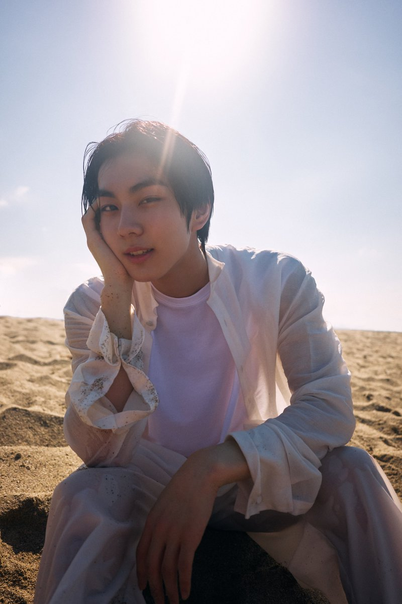
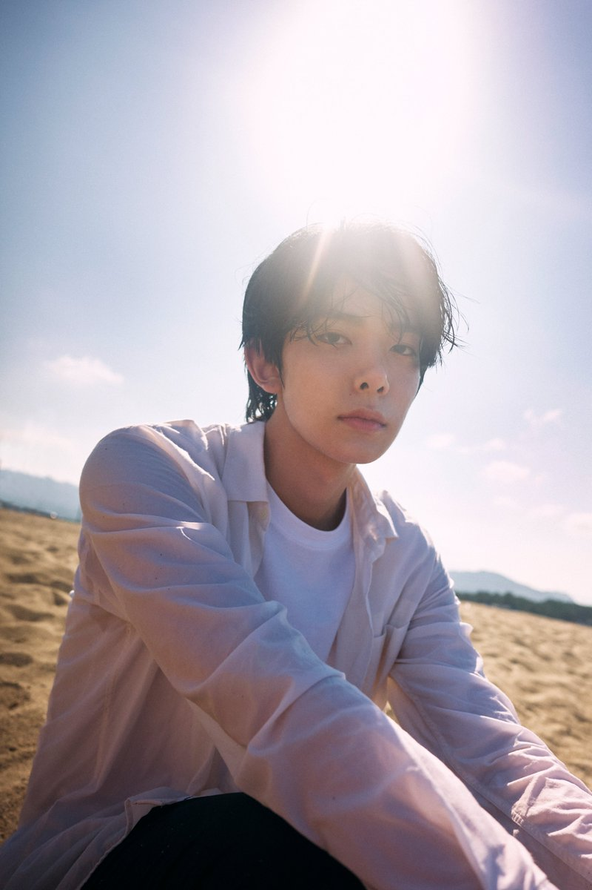
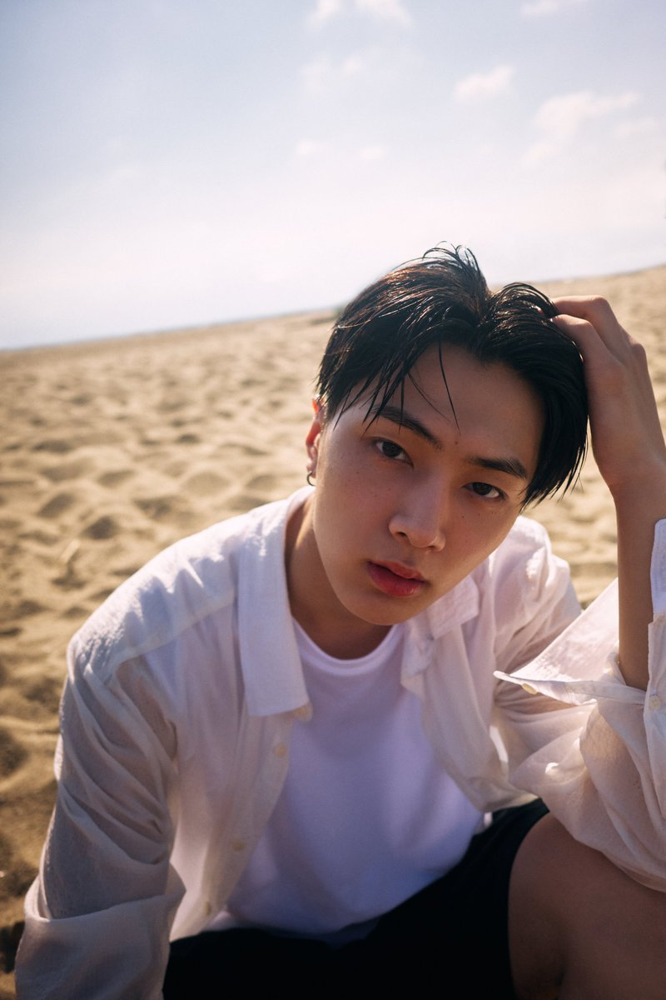
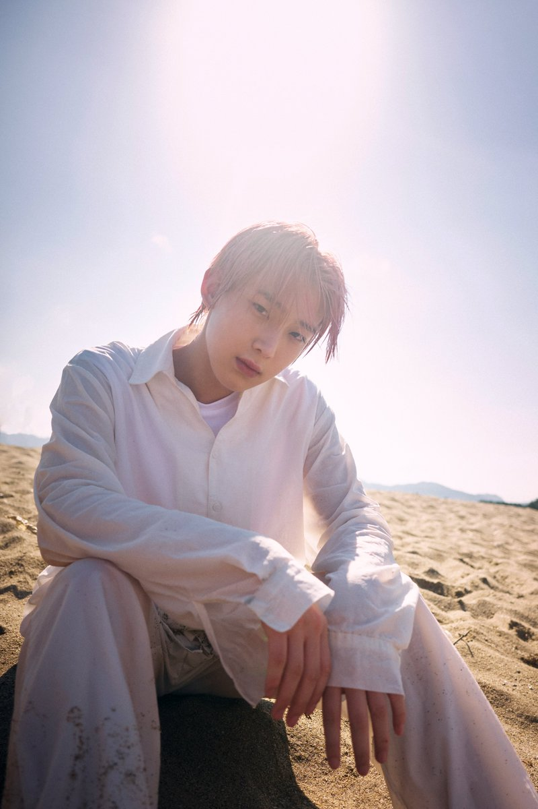
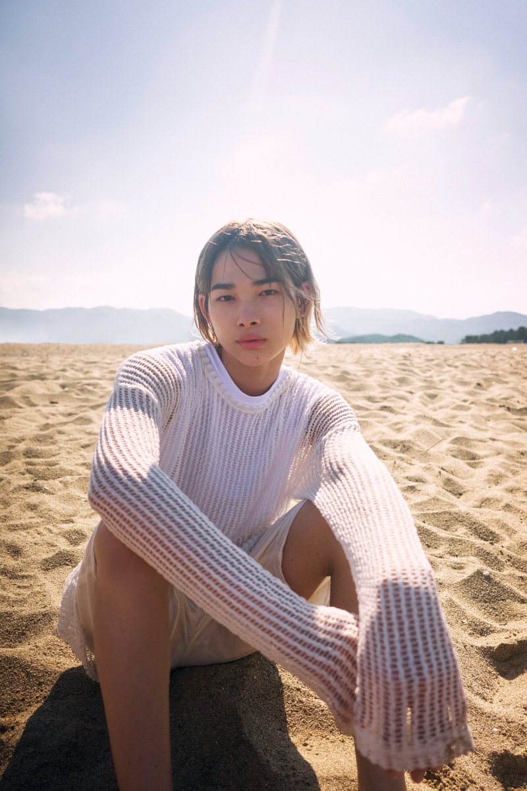

Engenium Page adalah portal situs online yang didedikasikan untuk memberikan fakta menarik dan mendalam tentang segala hal yang berkaitan dengan ENHYPEN. Kata Engenium diambil dari kata Engene
dari nama offical fandom ENHYPEN dan kata Premium
. Laman ini berisi konten mereka dari highlight comeback terbaru, keterangan album, funfact, serta berita dimana Engenium menyajikan informasi terkini dan akurat langsung dari perspektif penulis sebagai penggeram. Nikmati berbagai konten menarik seperti fakta menarik, foto, video, dan musik yang akan membuatmu semakin dekat dengan ENHYPEN.
Pada bulan Maret 2019, Belift Lab didirikan bersama oleh agensi hiburan Korea Selatan CJ E&M dan Hybe Corporation, dengan rencana untuk membuat band baru pada tahun 2020. Pada 8 Mei 2020, melalui program survival show bertahan hidup yang diyangankan di saluran televisi Mnet, mengumumkan I-Land. Konsep I-LAND sangat unik dan menarik dimana para peserta yang disebut trainee
, harus bersaing untuk mendapatkan tempat di rangking 9 besar agar dapat berada di posisi aman kualisifikasi anggota debut. Selama acara berlangsung, para trainee akan menjalani berbagai macam tantangan, mulai dari latihan vokal dan tari hingga penilaian kinerja individu dan kelompok. Mereka juga akan berinteraksi dengan mentor-mentor yang berpengalaman di industri musik, selain itu besaran hasil voting yang dilakukan oleh seluruh pendukung global sangat mempengaruhi keberadaan rangking para trainee.
Setelah melewati berbagai tahapan yang menegangkan, dari sembilan bisar kontestan final, akhirnya terpilihlah tujuh trainee yang berhak debut sebagai anggota grup idola baru jebolan survival Mnet. Dengan enam peserta dipilih berdasarkan peringkat global dan anggota terakhir oleh berdasarkan pilihan produser. Mereka adalah Heeseung, Jay, Jake, Sunghoon, Sunoo, Jungwon, dan Ni-ki. Grup ini kemudian diberi nama ENHYPEN diperkenalkan saat penayangan episode terakhir I-Land pada 18 September 2020.
Nama ENHYPEN memiliki makna yang mendalam. Hyphen
dalam bahasa Inggris berarti tanda hubung. Sama seperti tanda hubung yang menghubungkan kata-kata untuk membentuk makna baru, para anggota ENHYPEN akan saling terhubung, menemukan satu sama lain, dan tumbuh bersama.
Melakukan debut pada 30 Novermber 2020 dengan merilis mini album Border : Day One dengan lagi Given-Taken, ENHYPEN telah berhasil meraih banyak kesuksesan, di dukung dengan musik yang berkualitas, visual yang menarik, dan anggota yang berbakat, ENHYPEN dikenal dengan penampilan mereka yang dinamis dan sangat sinkron, yang membuat mereka mendapatkan pujian internasional sebagai 4th Gen Hot Icon
dan Global K-pop Rising Stars
. Mereka adalah boy group K-pop tercepat yang mencapai penjualan satu juta kopi, dan artis K-pop pertama dan satu-satunya dalam sejarah yang semua albumnya mendapatkan sertifikasi RIAJ. Mereka memiliki potensi yang sangat besar di masa depan, termasuk memenangkan berbagai penghargaan dan memiliki basis penggemar yang besar di seluruh dunia.
|  |  |  | |
JUNGWON |
HEESEUNG |
JAY |
JAKE |
| 2004.02.09 |
2001.10.15 |
2002.04.20 |
2002.11.15 |
|  |  | |
SUNGHOON |
SUNOO |
NI-KI |
| 2002.12.08 |
2003.06.24 |
2005.12.09 |
Yuk, kepoin lebih lanjut. And Become An Engene!
⋆. 𐙚 ˚. ⸜ (｡˃ ᵕ ˂ )⸝♡. ⊹₊ ⋆. ᯓᡣ𐭩. ⋆˚ ˖°.
Web Design by:
| Nama Lengkap | Azka Risqana Az Zahrah | |
| NIM | 11220251000119 | |
| risqanaazka11@gmail.com |